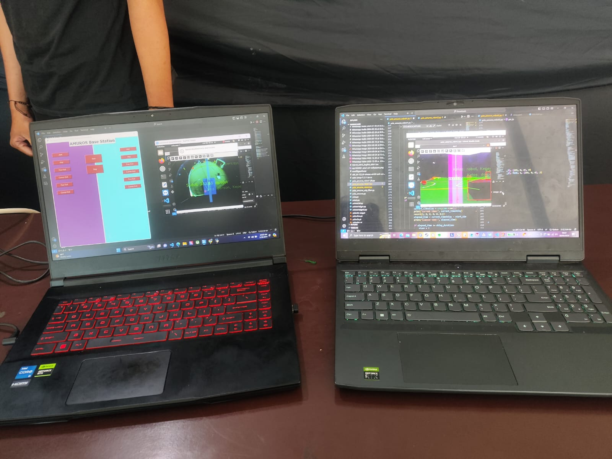

Teaching a Soccer Robot to See: YOLO on Amuros KRSBi-B
Real-Time Vision for Autonomous Robot Soccer ⚽🤖

In robot soccer, vision is everything. A robot must detect the ball, locate the goal, avoid opponents, and understand the field—all in real time. This project brings that capability to life by implementing a deep learning–based object detection system using YOLO on the Amuros KRSBi-B robot.
👁️ Real-Time Vision on the Field
The system uses YOLO (You Only Look Once) to detect key elements in a single pass, enabling fast and efficient processing:
- ⚽ Ball
- 🥅 Goalpost
- 🤖 Opponent robots
- 📏 Field boundaries
This makes YOLO ideal for dynamic environments where speed and accuracy are critical.
🧠 From Dataset to Intelligent Detection
The model was developed using the Ultralytics YOLO framework and trained on a custom dataset:
- Images captured under various lighting conditions
- Different distances and camera angles
- Real match-like scenarios
This ensures robust detection performance during actual gameplay.
🖥️ Edge AI Deployment
The model is deployed on the NVIDIA Jetson Nano, enabling:
- Real-time inference without cloud dependency
- Low latency for fast decision-making
- Compact integration within the robot
🔗 Integration with Robot Control
Detection results are processed into actionable data:
- Object coordinates (position)
- Movement direction
- Detection confidence
These outputs are integrated into the robot’s control system, enabling:
- Ball tracking
- Navigation toward the goal
- Obstacle avoidance
🛠️ My Role in the Project
I was responsible for developing the full computer vision pipeline—from dataset creation to deployment and integration.
📊 Dataset Preparation & Annotation
Collected images, labeled objects, and prepared the dataset for training.
🤖 Model Training & Optimization
Trained and optimized the YOLO model for accuracy and real-time performance.
🖥️ Deployment on Jetson Nano
Configured environment, installed dependencies, and deployed the trained model for edge inference.
💻 Python Vision Pipeline
Developed scripts to process camera input, extract object data, and communicate with the control system.
🔄 System Integration
Integrated perception with robot navigation, enabling real-time decision-making.
🚀 Why This Project Matters
- ✅ Enables autonomous robot soccer gameplay
- ✅ Provides real-time environmental awareness
- ✅ Demonstrates AI deployment on embedded systems
- ✅ Bridges deep learning with robotics control
🌟 Final Thoughts
This project transforms the robot from a simple machine into a perceptive, responsive player. By combining deep learning, embedded systems, and robotics, the system enables the robot to understand and react to its environment in real time.
In competitions like KRSBi, speed and accuracy are critical—and with YOLO-based vision, the robot is no longer just moving—it’s understanding the game.